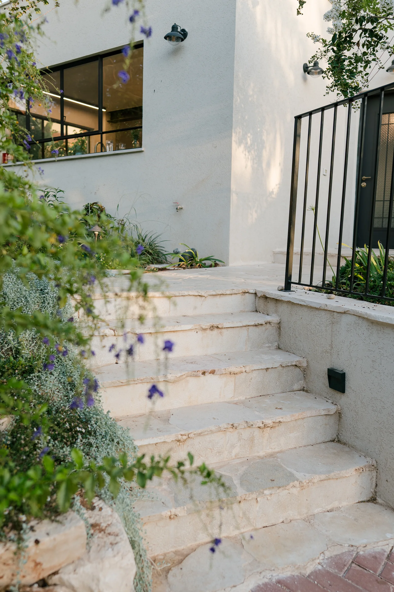
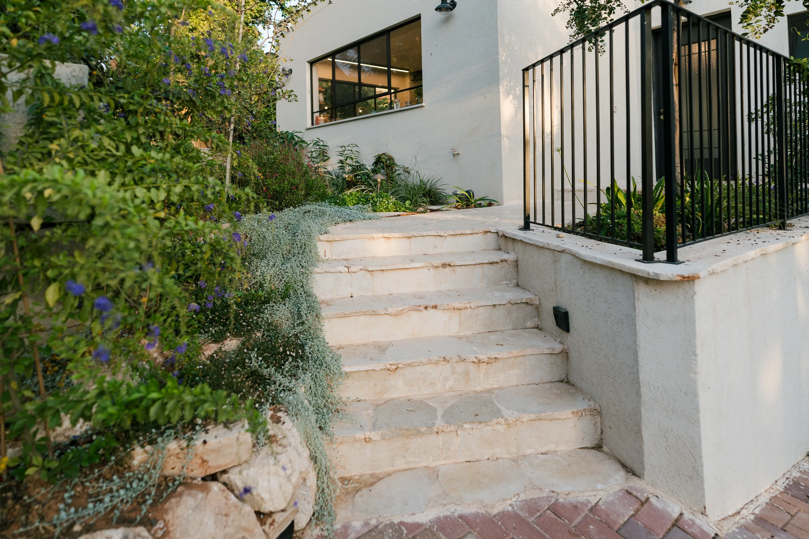
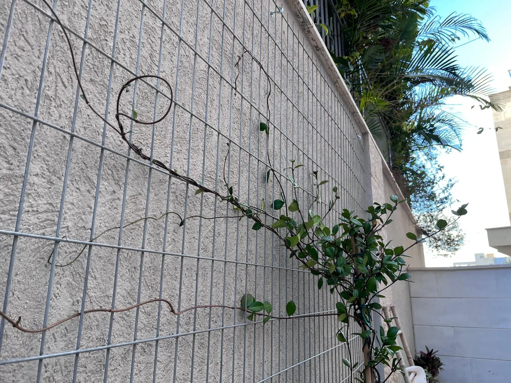
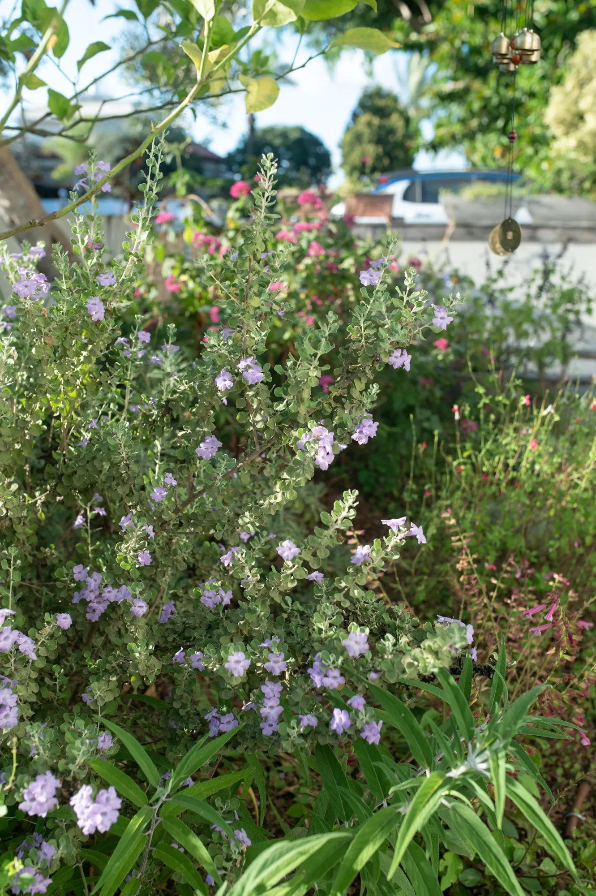

זכרון יעקב
מדשאה ודק עם שמשייה, ומסביב ערוגות שתולות בשכבות.
לסיפור המלא
הקמת גינות בראש, ולצדה ארבעה שירותים שמשלימים אותה.

הקמת גינות
אנחנו מתכננים ומקימים גינות ים־תיכוניות לבתים פרטיים בכל הארץ.
לבתים פרטיים, מחצר ריקה ועד גינה שלמה. תכנון, הקמה וליווי, לשטחים של 50 עד 500 מ״ר.
חידוש גינות
לגינה שכבר קיימת ולא מתאימה לחיים שלכם. אנחנו לא מתחילים מאפס: עצים בוגרים, צמחייה קיימת ומערכות שעובדות נשארים, וסביבם בונים מחדש.


תחזוקת גינות
תחזוקה היא לא רק כיסוח דשא. זה גיזום נכון, הזנה של האדמה, החלפת עונות וטיפול שמביא את הגינה לתוצאה שאליה תוכננה.
לרוב פעם בשבועיים. בחלק מהגינות פעם בחודש מספיק, ובעונת השתילה לפעמים צריך יותר.
גינון ציבורי
ביצוע, תחזוקה ופיקוח על שטחים ציבוריים וגינות קהילתיות, עם אותה גישה של צמחייה מקומית ואדמה חיה.
גינה ציבורית היא המקום שבו יישוב נפגש: ספסל בצל של עץ, שביל שהילדים הולכים בו לגן, ערוגה שהשכנים שותלים בה יחד.


פרויקטים מיוחדים
גיזום, ניקוי שטחים, השקיה, בריכות נוי, גדרות ושערים. כל אחד מהם יכול לעמוד בפני עצמו.
שישה שלבים, ולאורך כולם שלושה דברים שלא שוכחים: התקציב, צורכי התחזוקה והתנאים בשטח.
האנשים, הרצונות, השימושים והתקציב. פגישה בשטח.
מה תקבלו · סיכום של מה שעלה בפגישה, וכיוון ראשון של תקציב.
תכנון בועות: ישיבה, אירוח, רביצה, גידול ומעברים.
מה תקבלו · סקיצת בועות של כל החצר, לשיחה ולתיקונים.
פרגולות, דקים, ספסלים, גדרות, חיפויים, שבילים, כניסות, מסלעות ומים.
מה תקבלו · תוכנית עם חומרים ומידות, והצעת מחיר מפורטת.
עצים, ערוגות, גינת ירק, דשא מותאם, השקיה וניהול מי נגר.
מה תקבלו · רשימת צמחים, ותוכנית השקיה וניקוז.
הצוות של נוף וחורש, בעלי מקצוע וספקים.
מה תקבלו · לוח זמנים, ואיש קשר אחד לכל הביצוע.
טיפול שמביא את הגינה לתוצאה שאליה תוכננה.
מה תקבלו · ביקורים קבועים, לרוב אחת לשבועיים.

מדשאה ודק עם שמשייה, ומסביב ערוגות שתולות בשכבות.
לסיפור המלא
שש אדניות על הדק שליד המטבח, ומהן קוטפים תבלינים, ירקות ותותים.
לסיפור המלא
דק במרכז, ערוגות מסביב, ופינת אירוח שנכנסה לחצר שהייתה מוזנחת.
לסיפור המלא
צמחים עמידים שלא צריכים גיזום תכוף, וחלוקי נחל במקום אדמה חשופה.
לסיפור המלאזה תלוי בגודל השטח, בחומרים ובמה שכבר קיים בחצר. בפגישת ההיכרות נדבר על טווח תקציב, ואחרי תכנון האלמנטים תקבלו הצעת מחיר מפורטת, סעיף אחרי סעיף.
מהפגישה הראשונה ועד שתילה עוברים בדרך כלל כמה שבועות של תכנון, וההקמה עצמה תלויה בהיקף. העונה הכי טובה לשתילה היא הסתיו, עם הגשם הראשון.
לא. אפשר להתחיל בתשתיות, בהשקיה ובעצים, ולהשאיר את השאר לעונה הבאה. לפעמים זה אפילו עדיף.
צמחייה מקומית מכירה את הקיץ היבש שלנו. אחרי שהיא מתבססת, בשנה־שנתיים הראשונות, היא צריכה הרבה פחות השקיה מגינה רגילה.
אפשר להמשיך איתנו בתחזוקה קבועה, לרוב אחת לשבועיים, או לקבל מאיתנו הדרכה ולטפל בה בעצמכם.
כן. קורה שמתכנן אחר מתכנן ואנחנו מקימים, או שאנחנו מקימים חלק מהגינה לצד בעל מקצוע אחר.
בכל הארץ. הבסיס שלנו בבת שלמה, בכרמל.
ספרו לנו מה יש לכם היום, חצר, מרפסת או רצועה בכניסה, ומה הייתם רוצים שיהיה שם.
לתיאום פגישת היכרות